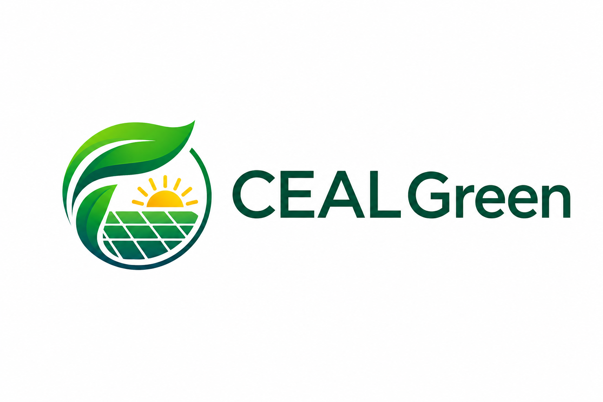

The circular badge as currently presented — assessed against scale, brand register, and illustration standard.

The mark as presented reads as an eco-certification badge or environmental NGO seal — not as a B2B execution engine. The circular seal format, the organic leaf illustration, and the composite "green energy symbols" composition are visual conventions associated with sustainability advocacy, certification bodies, and community organisations.
A government procurement officer or international capital provider encountering this mark is likely to read it as belonging to an advocacy organisation rather than a delivery firm.
Evidence: Brand Guidelines §1 Core Proposition — "CEAL Green is a Caribbean execution engine for green solutions." §2 Brand Personality — "Not an advocacy organisation or policy commentator." §2 What We Are Not — "Not idealistic — CEAL Green speaks from the work, not the wish."
The leaf/solar/sun composition is in the visual language of a free icon library or a Canva logo template. The gradient leaf, the stylised sunrise, and the solar panel grid are each individually recognisable as stock elements — and their combination in a circular badge is a pattern that appears across hundreds of generic green-energy companies globally.
The test for a professional services mark: does it look like it was built, or does it look like it was downloaded? The mark as presented reads as downloaded. This observation is not about the thematic concept — a leaf-and-solar composition is coherent for this brand. It is about execution quality.
Evidence: Brand Guidelines §2 Brand Personality — "Born digital, born green... designed for this era, not retrofitted for it."
Typography, colour split, spacing, and sizing — measured against the approved specification.
The wordmark text in the mark as presented does not appear to be Space Grotesk. The letterforms show characteristics inconsistent with the approved specification — particularly the C, E, A, L and the G in Green. The typeface appears to be a rounded geometric sans (possibly Nunito, Poppins, or a similar generic alternative).
Space Grotesk has a distinctive constructed quality — slightly condensed, with geometric regularity and distinctive letterform details. The current execution reads as softer and more generically rounded. The mismatch is visible at document scale.
Evidence: Brand Guidelines §5 Wordmark — "CEAL — Space Grotesk 700, uppercase" / "Green — Space Grotesk 500, title case."
The two-colour weight split in the current version is directionally correct, but the execution is inconsistent with the approved specification. The wordmark appears in a single dark teal with minimal differentiation. The approved colour split — Near-Black (#1A1F1E) and Mangrove (#1E4D3A) on light backgrounds; Oatmeal (#F7F4EE) and Mid Canopy (#8DCFAA) on dark — is the approved system and what differentiates the wordmark from a plain text label.
Word spacing: The approved spec defines a 0.18em left margin between CEAL and Green, baseline aligned. The current gap reads closer to a standard word space, disrupting the tight inline-flex pairing that gives the approved wordmark its visual unity.
Wordmark-to-mark clearance: The horizontal gap between the right edge of the circular emblem and the first letter of "CEAL" appears insufficient. Standard clearance for a horizontal lockup is a minimum of the cap-height of the wordmark at that scale.
CEAL letter-spacing: The approved spec sets CEAL at −0.01em (slightly tightened). The current execution appears at default spacing, making CEAL read as less constructed and less unified.
Why the sizing relationship between mark and wordmark matters — and how to apply it correctly.
The current mark centres "CEAL Green" text vertically alongside the circular emblem. The recommendation is a different approach, beginning with the sizing relationship.
The standard convention in professional horizontal lockups: the cap-height of the wordmark should be sized to equal the overall height of the circular emblem. When this sizing relationship is applied correctly, the wordmark baseline and the bottom of the emblem land on the same horizontal plane. Baseline alignment of the wordmark to the bottom of the emblem is the natural result of applying the sizing convention — not a separate decision layered on top.
The circular emblem in the current mark carries significant visual mass at the top (the leaf protrudes at the 12 o'clock position). Centering the wordmark alongside the full circle optical centre means the text floats relative to the heaviest part of the mark. The sizing convention resolves this: the text and the bottom of the circle share a baseline, anchoring the entire lockup visually.
#1A1F1E#B87A4E#1E4D3A
#F7F4EE#B87A4E#8DCFAA
Listed in the order that delivers the most brand value per unit of effort. Every item is actionable without designer interpretation.
Replace the current typeface with Space Grotesk 700 for "CEAL" (uppercase, letter-spacing −0.01em) and Space Grotesk 500 for "Green" (title case, letter-spacing +0.08em). Space Grotesk is available free at Google Fonts. Set the left margin between CEAL and Green at 0.18em, baseline aligned. This single change brings the wordmark into brand compliance immediately.
On the primary light background (Oatmeal #F7F4EE): CEAL in Near-Black (#1A1F1E), Green in Mangrove (#1E4D3A). On dark backgrounds (Mangrove #1E4D3A): CEAL in Oatmeal (#F7F4EE), Green in Mid Canopy (#8DCFAA). The two-colour split is what differentiates the wordmark from a plain text label.
Size the wordmark so its cap-height equals the total height of the circular emblem. This naturally aligns the wordmark baseline to the base of the emblem. Increase the horizontal clearance between the emblem's right edge and the first letter of "CEAL" to a minimum of the cap-height of the wordmark at target size (at 36px wordmark height, approximately 24–28px clearance).
Remove all gradients; the mark must work in flat colour. Reduce the illustration to one dominant geometric element or tightly unified composition. All linework must be geometric and constructed — no organic freehand curves. The circle border, if retained, should be a single clean stroke weight (2–3px at standard size). The mark must hold cleanly at 24px square. Brief: flat-colour, geometric, single dominant element, reduction to 24px, no gradients, no arc text.
Once Priorities 1–4 are complete, produce a single-colour version in Near-Black (#1A1F1E) and a reverse version in Oatmeal (#F7F4EE). Required for print, document embeds, and any context where the full palette is unavailable. The current gradient illustration is not viable in grayscale.
Three alternatives evaluated — one recommendation. Decision pending confirmation before the wordmark is finalised.
Interpunct (·) in Aged Teak between CEAL and Green. Introduces the third palette colour in a functional role. Creates a deliberate editorial pause. Genuinely uncommon in the greentech/B2B category. Holds at every scale.
Adoption pending confirmationTracking contrast: CEAL tighter (−0.04em), Green wider (+0.18em). Rewards close attention. At nav scale, the tracking difference collapses into imperceptibility — differentiation only works where the mark has room to breathe.
Inverted weight: CEAL light (300), Green bold (700). Boldest and most distinctive, but CEAL appearing visually subordinate reads as counterintuitive to new stakeholders. The right move when brand recognition is established enough that the inversion reads as intentional — not yet.
Wordmark only — primary recommendation for nav, document headers, email signatures, and constrained digital contexts.
The combined mark system has three standard configurations. Knowing when to use each prevents the mark from being misapplied across contexts.
At nav bar height (36px), the combined mark loses emblem legibility. The wordmark-only treatment maintains legibility where the combined mark begins to lose definition.
All items assessed against the approved brand guidelines. Priority order reflects brand value per unit of effort.
| Item | Status | Action required |
|---|---|---|
| Illustration style | Issue | Commission professional vector redraw — flat, geometric, single element, 24px-viable, no gradients |
| Wordmark typeface | Issue | Replace with Space Grotesk 700 / 500 per approved specification |
| Two-colour split | Issue | Apply approved palette split: Near-Black + Mangrove on light; Oatmeal + Mid Canopy on dark |
| Sizing convention | Issue | Size wordmark cap-height to equal total emblem height; baseline alignment follows |
| Wordmark-to-mark clearance | Issue | Increase to minimum cap-height clearance at target size |
| CEAL letter-spacing | Issue | Set to −0.01em per specification |
| Wordmark differentiation | Pending | Adopt Alt A (interpunct in Aged Teak) — pending confirmation from client |
| Monochrome version | Issue | Required once illustration is redrawn; gradient is not viable in grayscale |
| Wordmark only — primary recommendation | Action | Adopt wordmark only as primary execution for all digital contexts now; introduce combined mark when professional redraw is complete |
The most immediately actionable improvement: applying the correct typeface, two-colour split, and sizing convention produces a professional and brand-compliant expression that outperforms the current combined mark across all digital working sizes — and can be in place before any illustration work begins. The combined mark becomes viable when the professional vector redraw is complete. Until then, the wordmark carries the brand.